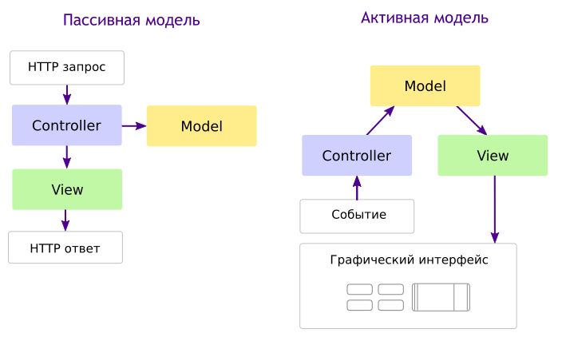
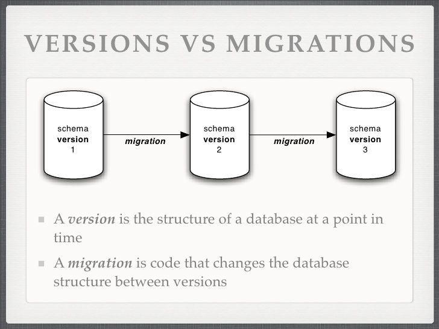

PHP
Урок 1️⃣7️⃣
Фреймворк
Фреймворк — программная платформа, определяющая структуру программной системы; программное обеспечение, облегчающее разработку и объединение разных компонентов большого программного проекта.
Инверсия управления
Inversion of control (IoC)

MVC
Model-View-Controller
Установка Laravel
# установим Laravel-installer
composer global require "laravel/installer"
# создаем новый проект guest-book
laravel new guest-book
# запускаем сервер
php artisan serve
Миграции
Traits. Abstract
<?php
trait Hello {
public function sayHelloWorld() {
echo 'Hello'.$this->getWorld();
}
abstract public function getWorld();
}
class MyHelloWorld {
private $world;
use Hello;
public function getWorld() {
return $this->world;
}
public function setWorld($val) {
$this->world = $val;
}
}
Traits/Трейты
<?php
trait Geocodable {
/** @var string */
protected $address;
/** @var \Geocoder\Geocoder */
protected $geocoder;
public function setGeocoder(\Geocoder\GeocoderInterface $geocoder)
{
$this->geocoder = $geocoder;
}
public function setAddress($address)
{
$this->address = $address;
}
public function getLatitude()
{
return $this->geocodeAddress()->getLatitude();
}
public function getLongitude() {
return return $this->geocodeAddress()->getLongitude();
}
protected function geocodeAddress() {
return $this->geocoder->geocode($this->address);
}
}
class RetailStore {
use Geocodable;
{
$geocoderAdapter = new \Geocoder\HttpAdapter\CurlHttpAdapter();
$geocoderProvider = new \Geocoder\Provider\GoogleMapsProvider($geocoderAdapter);
$geocoder = new \Geocoder\Geocoder($geocoderProvider);
$store = new RetailStore();
$store->setAddress('420 9th Avenue, New York, NY 10001 USA');
$store->setGeocoder($geocoder);
$latitude = $store->getLatitude();
$longitude = $store->getLongitude();
echo $latitude, ':', $longitude;
Traits/Трейты
The PHP interpreter copies and pastes traits into class definitions at compile time, and it does not protect against incompatibilities introduced by this action. If your PHP trait assumes a class prop‐ erty or method exists (that is not defined in the trait itself), be sure those properties and methods exist in the appropriate classes.
composer.json
{
"name": "acme/hello-world",
"require": {
"php": ">=5.6",
"monolog/monolog": "1.0.*"
},
"autoload": {
"psr-4": {
"Acme\\": "app/"
}
}
}
Composer varsions
>=1.0 <2.0
>=1.0 <1.1 || >=1.2
~1.2 >=1.2 <2.0.0
~1.2.3 >=1.2.3 <1.3.0
^1.2.3 >=1.2.3 <2.0.0 # semantic versioning
Composer
Composer — менеджер зависимостей для PHP; Освоение Composer: советы и приемы использования; Composer: Шпаргалка команд; Стабильность пакетов в Сomposer;
composer init # создать composer.json
composer install # установить зависимости
# добавить зависимость в проект
php composer.phar require vendor/package:2.*
# обновить все зависимости
php composer.phar update
# обновить один пакет
php composer.phar update vendor/package
Composer autoload
<?php
require __DIR__ . '/vendor/autoload.php';
$log = new Monolog\Logger('name');
$log->pushHandler(new Monolog\Handler\StreamHandler('app.log', Monolog\Logger::WARNING));
$log->addWarning('Foo');
<?php
$loader = require __DIR__ . '/vendor/autoload.php';
$loader->addPsr4('Acme\\Test\\', __DIR__);
GIT. Настройка
# имя и email
git config --global user.name "Your Name"
git config --global user.email "your_email@whatever.com"
# переносы строк
git config --global core.autocrlf input # set true for windows
git config --global core.safecrlf true
# вывод настроек
git config --list
GIT
# создать репозиторий
git init
# клонировать репозиторий
git clone git://github.com/schacon/grit.git
# проверка состояния файлов
git status
# git diff
посмотреть изменения в файлах
# добавить файл под версионный контроль
git add README
# фиксация изменений
git commit
# просмотр истории комитов
git log
# изменение последнего комита
git commit --amend
GIT
# создать репозиторий
git init
# клонировать репозиторий
git clone git://github.com/schacon/grit.git
# проверка состояния файлов
git status
# git diff
посмотреть изменения в файлах
# добавить файл под версионный контроль
git add README
# фиксация изменений
git commit
# просмотр истории комитов
git log
# изменение последнего комита
git commit --amend
GIT. Ветки
# список веток и текущая ветка
git branch
# переключиться на существующую ветку master
git checkout master
# создать ветку и перключиться на нее
git checkout -b testing
# удалить ветку testing
git branch -d testing